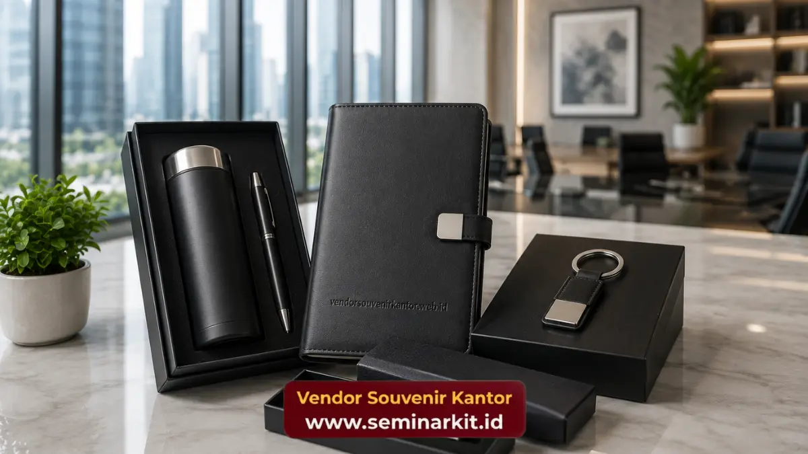

Souvenir kantor untuk mitra bisnis adalah barang bernilai simbolis dan fungsional yang diberikan perusahaan kepada klien atau rekan kerja sama sebagai ungkapan terima kasih dan penguat hubungan profesional.
Pemberian ini biasa dilakukan saat pertemuan bisnis, penandatanganan kerja sama, atau akhir tahun. Kualitas dan kesan yang ditinggalkan souvenir sangat memengaruhi persepsi mitra terhadap perusahaan.
- Souvenir untuk mitra bisnis berbeda dari souvenir karyawan karena menekankan kesan eksklusif dan profesional.
- Pemilihan barang idealnya mencerminkan level kerja sama dan tingkat kedekatan relasi.
- Momen pemberian souvenir dapat disesuaikan dengan siklus kerja sama bisnis, bukan hanya perayaan tahunan.
- Souvenir yang berkesan mampu memperpanjang usia hubungan bisnis jangka panjang.
- vendorsouvenirkantor.web.id menyediakan pilihan souvenir eksklusif yang dapat disesuaikan dengan identitas merek perusahaan Anda.
Apa Itu Souvenir Kantor untuk Mitra Bisnis dan Kapan Diberikan?
Souvenir kantor untuk mitra bisnis adalah bentuk apresiasi non-moneter yang diberikan kepada klien, vendor, atau rekan kerja sama guna memperkuat ikatan profesional di luar transaksi bisnis semata.
Pemberian ini umumnya dilakukan pada momen tertentu seperti kunjungan pertama klien, penandatanganan kontrak baru, ulang tahun kerja sama, atau perayaan akhir tahun.
Dalam praktiknya, souvenir untuk mitra bisnis sering menjadi bagian dari strategi relationship management perusahaan.
Pemberian yang dilakukan pada waktu yang tepat dapat menciptakan momen berkesan yang sulit tergantikan oleh komunikasi formal semata, seperti email atau laporan kerja sama.

Mengapa Souvenir Kantor Penting dalam Membangun Hubungan Bisnis
Hubungan bisnis yang kuat tidak hanya dibangun melalui transaksi, tetapi juga melalui interaksi personal yang membuat mitra merasa dihargai.
Souvenir kantor berperan sebagai jembatan emosional yang melengkapi hubungan profesional formal.
Ketika sebuah perusahaan memberikan souvenir yang dipilih dengan cermat, mitra bisnis cenderung merasakan bahwa kerja sama yang terjalin dipandang lebih dari sekadar kesepakatan dagang.
Perasaan dihargai ini secara umum berkontribusi terhadap loyalitas mitra dan keterbukaan dalam negosiasi kerja sama berikutnya.
Selain aspek emosional, souvenir kantor untuk mitra bisnis juga berfungsi sebagai representasi identitas perusahaan.
Desain, kualitas bahan, dan kemasan souvenir secara tidak langsung mengomunikasikan standar profesionalisme perusahaan kepada pihak eksternal.
Jenis Souvenir Kantor yang Cocok untuk Mitra Bisnis
Jenis souvenir yang cocok untuk mitra bisnis umumnya menonjolkan kesan elegan dan eksklusif, seperti set alat tulis premium, hampers berkualitas tinggi, plakat penghargaan kerja sama, atau perlengkapan kerja bermaterial pilihan.
Set alat tulis premium seperti pulpen eksekutif dan notebook berbahan kulit sering dipilih karena kesan formalnya yang sesuai untuk relasi bisnis tingkat menengah hingga eksekutif.
Hampers berisi produk pilihan seperti makanan premium atau perlengkapan kerja juga menjadi opsi populer, terutama pada momen perayaan akhir tahun.
Untuk kerja sama jangka panjang atau pencapaian tertentu, plakat penghargaan atau merchandise bermaterial logam sering digunakan sebagai simbol apresiasi yang lebih formal dan tahan lama.
Pemilihan jenis souvenir sebaiknya mempertimbangkan tingkat formalitas hubungan serta budaya kerja mitra bisnis yang dituju.
Bagaimana Souvenir Kantor Mencerminkan Citra Profesional Perusahaan?
Souvenir kantor mencerminkan citra profesional perusahaan melalui detail seperti kualitas bahan, kerapian kemasan, serta konsistensi identitas visual yang ditampilkan pada produk.
Kualitas bahan yang digunakan menjadi indikator pertama yang dinilai penerima. Barang dengan bahan premium dan finishing rapi.
Memberikan kesan bahwa perusahaan memperhatikan standar tinggi dalam setiap aspek operasionalnya, termasuk hal-hal yang tampak kecil seperti souvenir.
Kemasan turut memainkan peran penting. Kemasan yang didesain khusus dengan warna dan elemen visual sesuai identitas merek menciptakan pengalaman unboxing yang berkesan, sekaligus memperkuat pengenalan merek di benak penerima.
Konsistensi ini penting agar souvenir tidak terkesan asal-asalan, melainkan bagian dari strategi komunikasi merek yang terencana.
Momen Tepat Memberikan Souvenir kepada Mitra Bisnis
Momen yang tepat untuk memberikan souvenir kepada mitra bisnis meliputi awal kerja sama, pencapaian target bersama, perayaan akhir tahun, hingga kunjungan resmi ke kantor perusahaan.
Pemberian souvenir pada awal kerja sama dapat menciptakan kesan pertama yang positif dan membangun rasa saling percaya sejak dini.
Sementara itu, souvenir yang diberikan pada momen pencapaian target bersama berfungsi sebagai bentuk perayaan atas hasil kolaborasi yang telah dicapai kedua belah pihak.
Perayaan akhir tahun juga menjadi momen umum untuk memberikan souvenir sebagai ucapan terima kasih atas kerja sama sepanjang tahun.
Selain itu, kunjungan resmi mitra bisnis ke kantor perusahaan sering dijadikan kesempatan untuk memberikan souvenir secara langsung sebagai bagian dari sambutan formal.
Untuk memastikan setiap momen tersebut terisi dengan souvenir yang tepat dan berkesan, Anda dapat mempercayakan kebutuhan souvenir kantor untuk mitra bisnis kepada vendorsouvenirkantor.web.id, yang siap membantu penyediaan souvenir eksklusif sesuai kebutuhan perusahaan Anda.

Banner promosi: klik gambar untuk langsung terhubung ke WhatsApp tim sales.